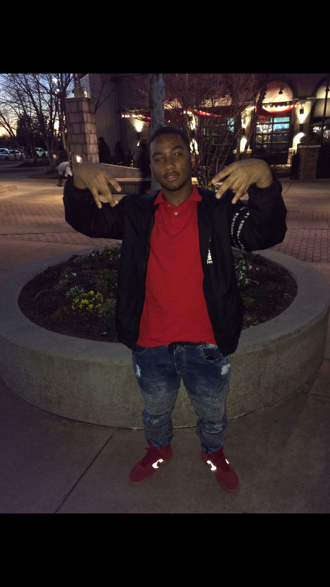

I am named after my dad who is also named after his dad. One of my favorite things to do is to either play video games, workut or be in the outdoors. I mainly play shooter games which i've been playing since I was four, i tend to focus on more upper body when working out and i enjoy hiking, fishing, hunting or anything outdoors related.
When is come to school my favorite subject is history because to know history is to know the future because history often rhymes and humans are predictable and it's amazing to learn of where foods, customs, and traditions come from. my second would be science which is odd to some but, I love to experiment, study how organisms work and act, as well as forensic science because it's kinda cool to be able to tell when and how someone died.
